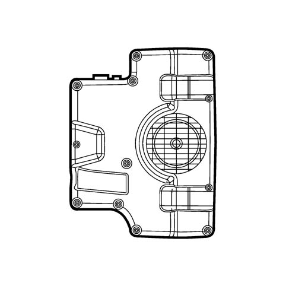
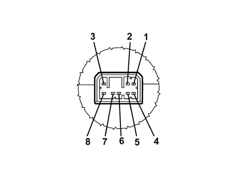
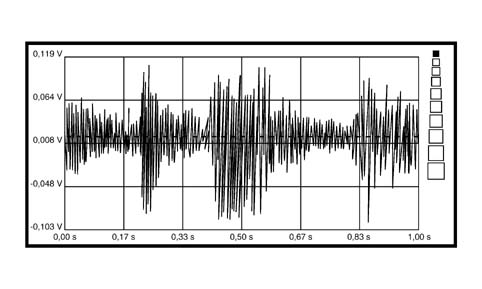
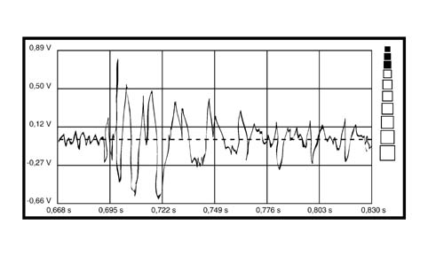
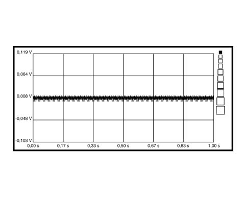

5570TK SUBWOOFER OPERATION AUDIO SIGNALS CHECK
- Path
- Test > 55 ELECTRICAL EQUIPMENT > 5570 ACCESSORIES > 5570T CAR RADIO AND CAR TELEPHONE > 5570TK SUBWOOFER OPERATION AUDIO SIGNALS CHECK
- Kind
- test / check procedure
- Applies to
- all engines; all production periods
- Interactive page
- https://sloeber94.github.io/elrnDB-fPnd/en/#/169001324
Applies to: all engines; all production periods
- Foreword: In order to carry out this test correctoly any music Compact Disc must be correctly inserted in the CD cartridge.
- Switch the radio on.
- Enter the Voltmeter ambient and connect the Voltmeter probes (positive and negative) alternately to the Subwoofer amplified firstly at pins:
- 2 and 5 for right audio input and
- 1 and 4 for left audio input


1. Pin n°1 left audio input (+)
2. Pin n°2 right audio input (+)
3. Pin n°3 +13.5 Vdc power supply
4. Pin n°4 left audio input (-)
5. Pin n°5 right audio input (-)
6. Pin n°6 not connected
7. Pin n°7 earth (GND)
8. Pin n°8 ignition enablement (Key-on)
- Using the Examiner select a 20 Volt end of scale and 5 seconds, press the Start button and the values of the image that appear should be evaluated with a tolerance of around 20% and should be similar to those listed below:

- Amplifying the graphic trend of the voltage, the signal displayed should be similar to the following:

- The presence of this graph, shown at the subwoofer input, indicates that the final audio stage of the Connect is working. If the audio is missing from the subwoofer and the supply and ignition enablement checks have been carried out correct [TP_5570J], the cause is due to the latter which is considered defective.
- If the audio signal to the amplifier is as follows; the Connect final audio stage or the wiring is faulty.
